Gravity was my year 12 end-of-year project. As such, I was forced to prepare a lengthy presentation of my work. The following is a reworked, slightly abridged, version of my SACE submission. Accordingly, it's a lot longer than my regular descriptions of projects, and is also structured a bit differently. The actual SACE submission is also available here and you can play with gravity here.
The original idea was to create something visual. Animation could be a part of it, particularly if that animation is generated using code. The code could be procedural, random, physics-based etc. This could partially be inspired by a web project called Balls.
The purpose of this project is to provide teachers with a physics tool to communicate motion topics to students. Many services available are limited to only performing specific tasks. Mine would be general-purpose and can be used for a variety of different reasons. This may mean, for example, that students will need to know how to set up a digital experiment and thus show an extra level of understanding.
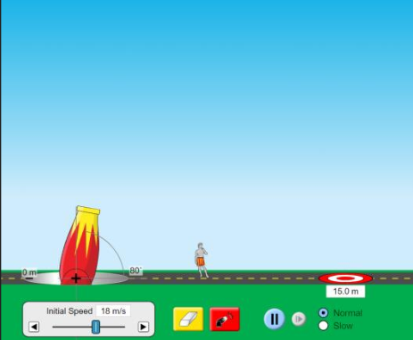The goals for the project include:
The project is to be done in pure JS, to make it as accessible as possible to students. I will need a central array of every item on the screen; each one saved as an object. I will need a constructor function to generate each object. Given users will turn on & off settings, I will need if statements & other conditions to determine whether these settings are on or not. To animate every frame, I will need to use an interval function. Overall, I want an elegant and innovate way of making this simulation work. I believe the strategy I have chosen constitutes this.
The programming is to be done (roughly) in these sections:
The below Gantt chart helped me keep track of what needed doing and when. It gave me strict deadlines for key tasks. I also programmed in sections for new ideas; I hoped that testing & feedback would give rise to features I hadn’t thought of yet in planning.
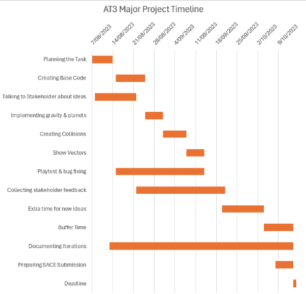After the first iteration, I had created an animation pane & the ability to click to add balls to it.
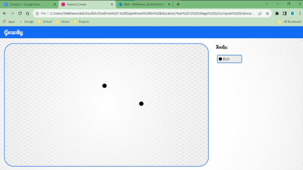This iteration also featured pseudocode that could handle the movements of objects. I divide the motion by fps to ensure that for a total of 1 second, the object moves the correct amount of distance.
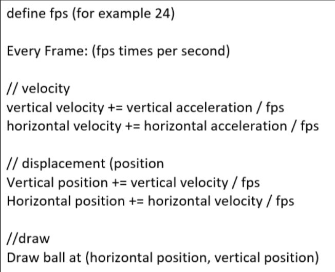This is the code that triggers the kinematic code. The objects move when their .update() function is called.
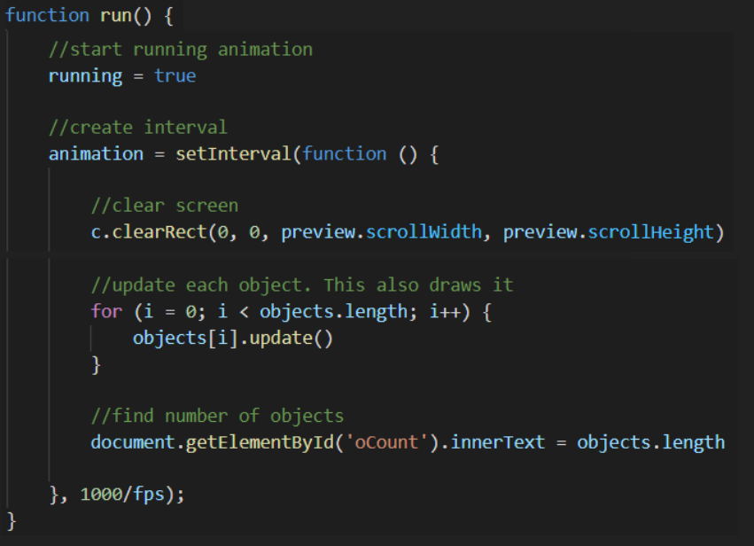Another consideration was in converting between units. I would like the code to handle everything using meters to allow for accurate calculations using SI units. BUT the HTML canvas handles things in pixels. For this reason, a simple conversion function is used that uses the ratio between the pixels and the known screen size. This function is called whenever things are displayed on screen.
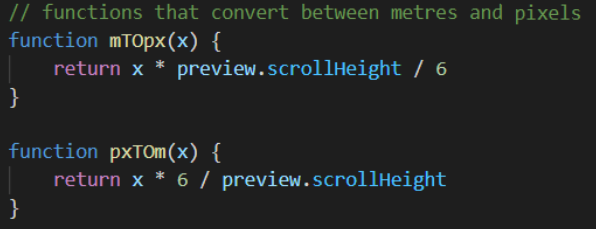I added gravity & air resistance to the code. Now, objects have forces acted upon them. This worked perfectly with the kinematic code I set up in the previous iteration.
A challenge during this iteration was programming air resistance. Air resistance is a form of friction and thus obeys this law in physics (below). The force acts against the direction of velocity. I was unable to perfectly replicate this, so I instead reduced acceleration by a factor of the velocity and the cross section area (radius). Whilst this doesn’t perfectly match the formula, it produces an equivalent result.
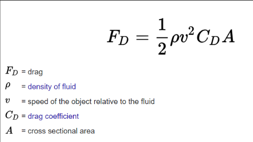A nice consequence of this is that objects now reach a terminal velocity. Air resistance is the reason behind why objects have a terminal velocity & this effect can be seen in my simulation as a result of the implementation of drag.
Some feedback during this iteration confirmed my suspicion that the frictional equations weren’t 100% accurate, but I decided it would be fine anyway.
For this iteration, I added planets to the simulation. As planned, this would essentially be a point that drew objects toward it as a center of gravity. The planet is shown as a hollow ring (to differentiate it from a ball object).
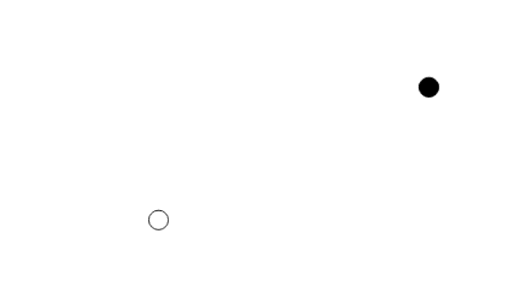Next I had to actually add this functionality. So my next task was to plan how an object would detect every planet and go towards it.
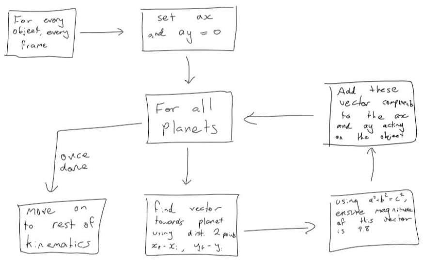The flowchart mentioned a list of planets. To achieve this, every frame a list of planets would be written with each planets x & y positions. This code was done as part of the animation function.
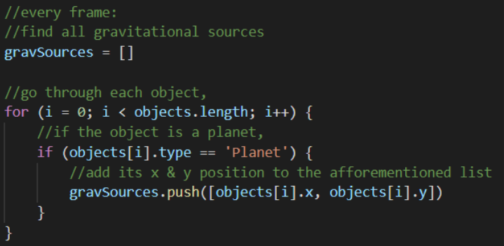The process shown in the flowchart essentially depicts vector addition; done by summing the components. The flowchart directly corresponds to this piece of code which is reliant on the list of gravitational sources shown on slide previous.
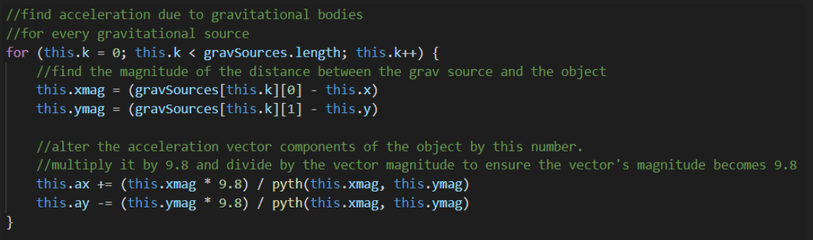One expected consequence of the code is that it could allow for uniform circular motion. In other words; an orbit. This uses the fact that the acceleration is roughly perpendicular to the velocity of an object. As expected, any object with a velocity in a different direction to its acceleration will move elliptically around a singular gravitational body.
Another consequence of this code that was not expected is that an object will come to a rest state between two planets. This is particularly the case when there is drag. Whilst it was unexpected, it makes sense as this represents the presence of a balanced force.
The solution I've come up with works, but it has flaws. The primary flaw is that acceleration due to gravity doesn’t increase with proximity. This was necessary to mitigate the issue which was that using both planetary gravity and a downward gravity is a juxtaposition that wouldn’t really exist in the real world. It doesn’t make too much sense to use both at the same time. For this reason, teachers will probably have to tell their students which of these two features to use; not both. Whilst this doesn’t exactly make sense, the fact that both can be used in the same software constitutes an innovative feature that I’m glad this simulation has.
For this iteration, I added wall collisions to the simulation. Now, objects can repel against the wall should you turn on wall collisions.
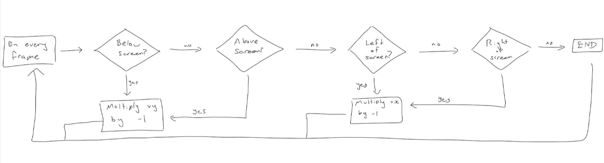I altered the code from the flowchart to handle each conditional separately rather than in a chain for the code, allowing for the possibility of an object moving into the corner.
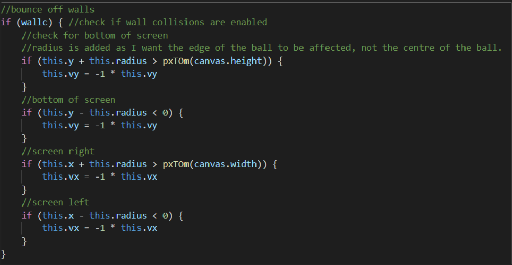One pretty big issue is that, well… the code didn’t work. This was because it detected the ball being below the floor multiple times and would reverse the velocity multiple times and on every frame. This was a pretty big issue. The solution was to teleport the object to just above the floor when it went below the ground.
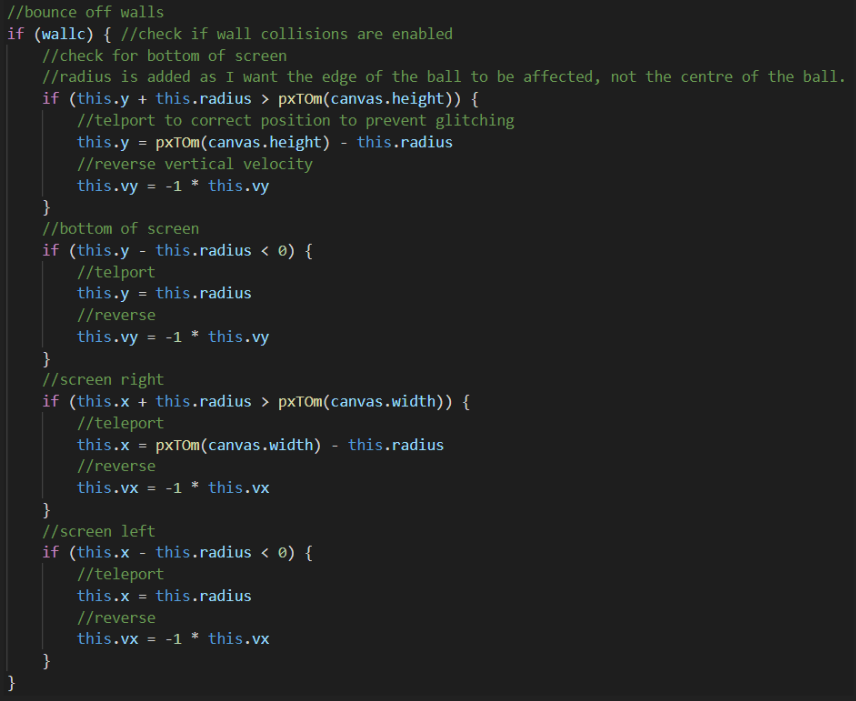Moving on, I wanted objects to rest on the ground once their kinetic energy has been worn out. This would be the case if there was air resistance. I wondered if I would need to detect the object having a small enough velocity for me to set it as ‘at rest’ and not move. However, I discovered this proved to not be necessary. You'll find that, with air resistance, bouncing objects come to a rest with no extra 'rest' checking.
One nice consequence of the code (that I expected) is the presence of clear parabolic motion in the movement of the balls. This makes sense as a parabola is defined as a quadratic y component and a linear x component which is what is achieved by my code.
In this iteration, I added the ability some helpful saving abilities:
I had a slight issue with the saving code. I wanted to stringify the array of simulation objects, but this was not working. I looked into it and it turned out that the issue was that my object included functions; which could not be stringified. Instead, I had to convert all functions into strings first. I looked into using APIs that could handle this, but converting it to a string was less work and was fairly innovative code. The load code more or less the same, it just does the inverse of this.
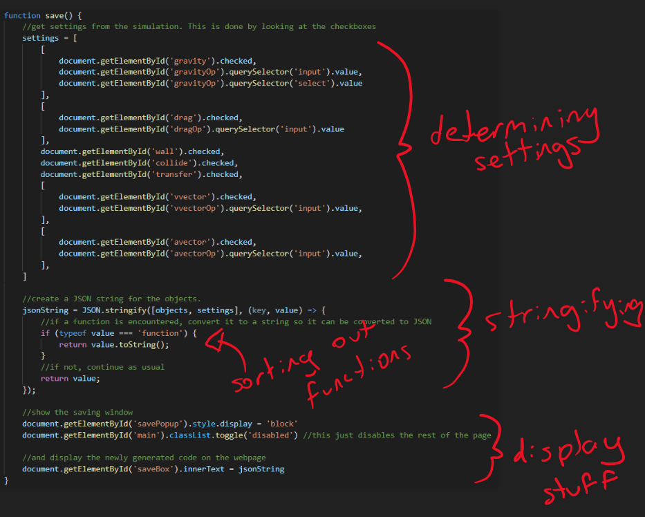Feel free to play with the save/ load features when you play with Gravity.
Before I move on, there is one flaw I am quite aware of. I do not like that the save codes are SO long. The screenshot below is literally just a 2-body orbit system. This occurs because, for every object it’s saving the function that controls its movement as a string. This really doesn’t seem necessary because when read back in, the program will already know how to control an objects’ movement. It doesn't need the function too. It’s something that can be worked on in future, if need be, but for now it is sufficient.
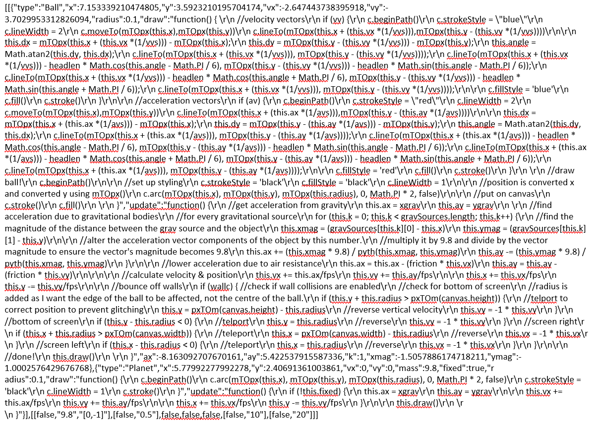For this iteration, I added vectors to the simulation. The red and blue represent any object’s acceleration and velocity, respectively.
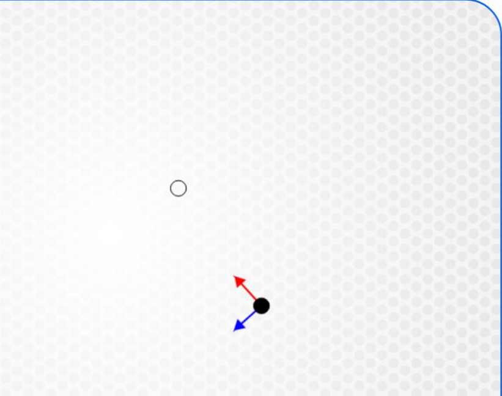Drawing the lines that were the vectors would be aided by my existing kinematic code. I began with some pseudocode to show my plans for how to do this.
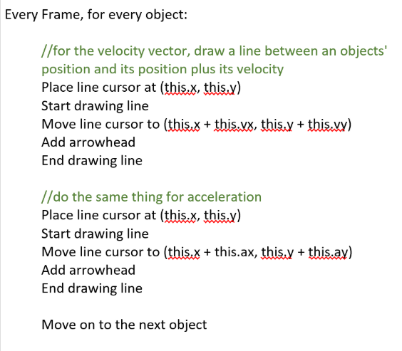The code that I wrote that achieves this is shown below. However this code doesn’t do arrowheads. For that, I chose to appropriate others’ code that essentially does some complex trigonometry to determine the points where the arrows should be.
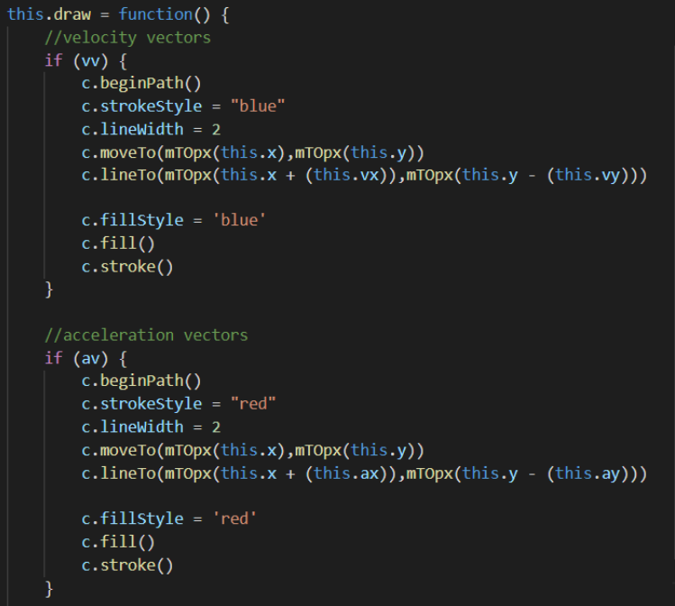For physics people, I won't need to explain where an acceleration vector comes from. But for others:
It’s clearer to see the relationship between a velocity vector and an object than an acceleration vector and an object. An object will travel the length of a velocity vector in 1 second. The acceleration vector works similarly. In one second the velocity vector will change by the magnitude and direction of the acceleration vector. It’s calculus! For this reason, the same code can be used for both, but with the vx & vy swapped out for ax & ay; the acceleration vector components.
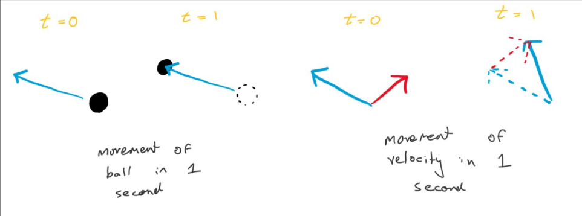A bit of a bug: initially, the vectors appeared far too large.
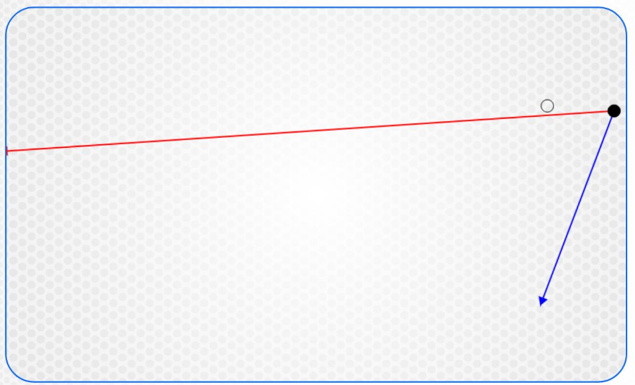But then, the more I thought about it, the more it actually did make sense. Acceleration due to gravity is 9.8m/s/s, and the screen is only 10m wide. So of course the vectors are as large as the screen. On one hand the current model was accurate, but on the other it looked bad and unhelpful. So I chose to have an option to scale the vectors down by an optional factor. This innovative feature allowed for greater user experience without compromising my goals.
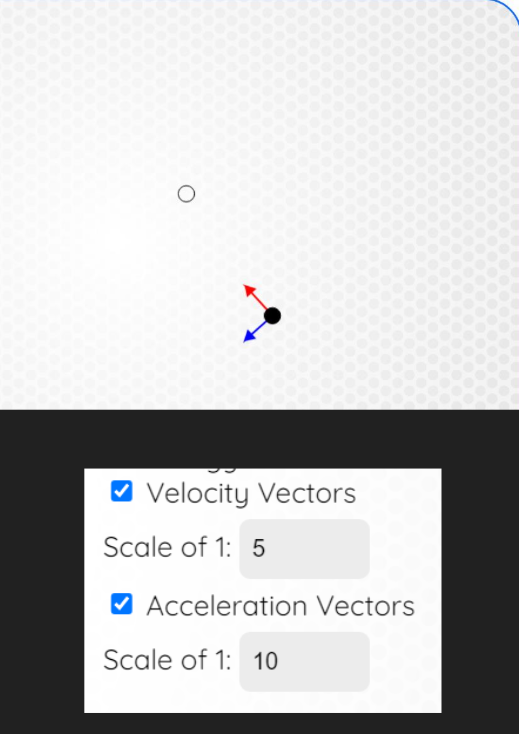In this iteration, I added object collisions. Now, when two objects collide, they bounce off one another.
The first step in making these collisions happen is to figure out the math behind it. This used a lot of trigonometry & everything was done using angles rather than cartesian points like much of the other code. I began by considering the behaviour in a horizontal setting, then considered how to translate any given setting into a horizontal one. I made use of properties like line perpendicularity & tangents of circles.
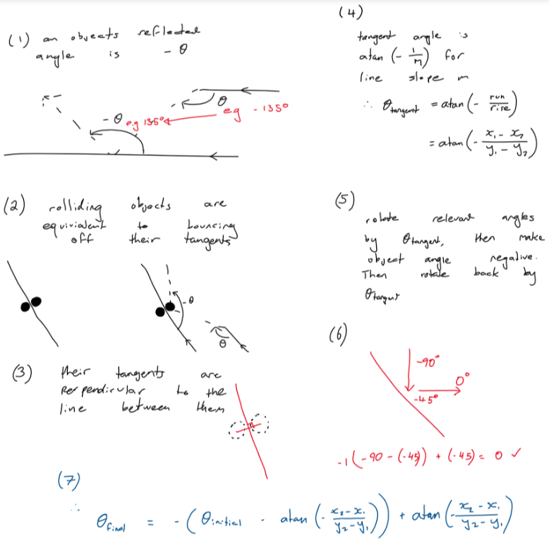This code does exactly the math described in the previous slide. It detects a ball being nearby and does the correct trigonometry. It also has a feature at the bottom to prevent multiple firings during the one collision; it waits until postcollision to grant permission to run the code again.
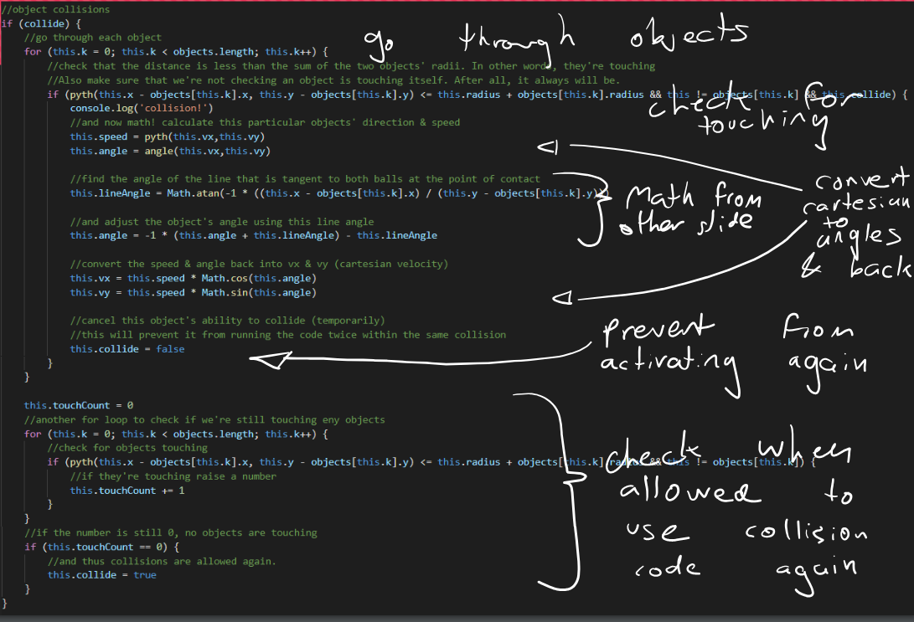A major bug I experienced was that objects at speed would often pass through one another. There is a lot of high speed movement in my sim, so this happens a lot.
So I began thinking about what could have caused this. In the wall collision section, the issue was often that individual frames wouldn’t perfectly time themselves to when there should be a collision. This is likely what’s going on here too. Objects at speed move past each other such that there is no individual frame where they’re close enough for the code to recognise a collision. I could increase the framerate so that it’s more likely there will be such a frame, but this comes with several issues:
I began thinking of other, more creative solutions. The only thing I could think of was if I could somehow calculate the expected path of an object as a continuous function. Then I would do this for every object and look for intersections. This would require creation of graphs, knowledge of parametric equations, and some other complicated math.
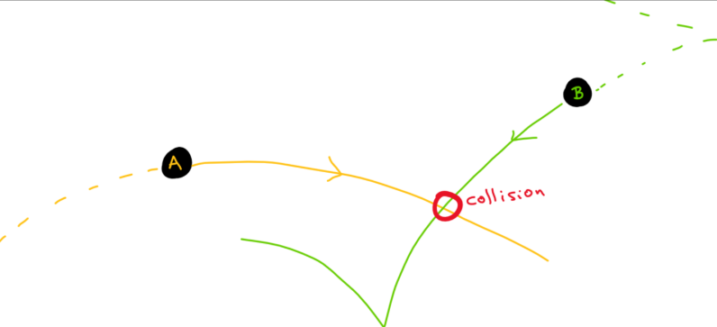The parametric equations that needed to be calculated would be based on the ground, and based on planets in the system. For this reason, they would be incredibly complex and beyond the scope of this project. Unfortunately, I will have to live with slightly buggy code.
In this iteration, I added the ability to select an object and change its properties with a little popup window. The rest of the simulation also had to be made to handle non-regular objects.
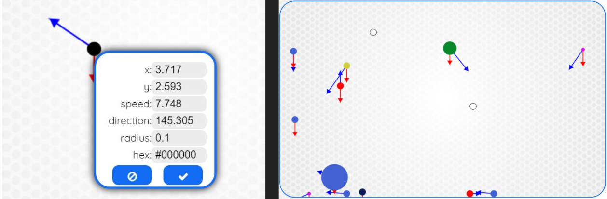Because it's all in the HTML canvas, things benign as selecting an object have to be done manually. Below is a flowchart I created to represent the algorithm to select an object.
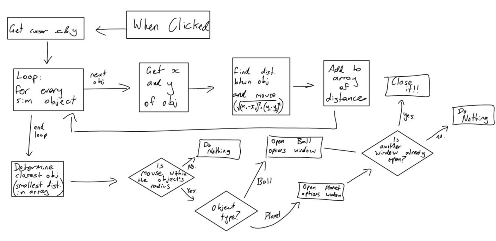If you got through that, I commend you. Given I had done all this work for the SACE submission, I thought I may as well put it here too. Surprisingly, I only covered about two thirds of the content in the original submission! I left out the videos, extra details, stakeholder correspondence, and a lengthy evaluation! If you're interested in seeing that (fuck knows why), the original PowerPoint presentation is available here.
Gravity is available to play with on my website here. Enjoy!